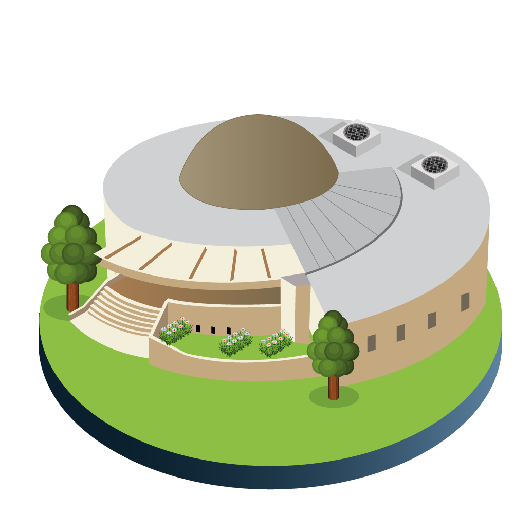

En la DDC está el centro de liderazgo para la implementación de nuevos métodos, técnicas y procedimientos que se requieren para el manejo de la información contable. Esto incluye el reconocimiento, evaluación, control y revelación de datos para el Régimen de Contabilidad Pública (?)
El Régimen de Contabilidad Pública es emitido por la Contraloría General de la Nación, y contiene la regulación contable pública. Para ver más detalles, ingresa a este enlace.
La Dirección también promueve la investigación contable. El propósito de esto es emitir herramientas técnicas (documentos y conceptos) para el mejoramiento del Sistema Contable Público Distrital (SCPD) , según requerimientos de la SDH y otras entidades del Distrito.
La DDC dirige el proceso contable de la SDH, así como el proceso de agregación de la información distrital. Esto hace posible la elaboración y presentación de los estados financieros consolidados: Bogotá D.C., Gobierno y Sector Público Distrital.
Además, es labor de la DDC crear medidas para que se cumplan las normas contables. En caso de ver un incumplimiento, esta debe informar a las instancias administrativas y disciplinarias.
Estas son las dos divisiones de la DDC: Subdirección de Gestión Contable de Hacienda, que se encarga del proceso contable de la Secretaría Distrital de Hacienda (SDH) Subdirección de Consolidación, Gestión e Investigación, que presta asistencia técnico contable y consolida la información contable de Bogotá D.C, Sector Gobierno Distrital y el Sector Público Distrital .